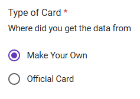

Using the Card Collector Tool
Before You Get Started
- Do you have the link to the content on the Yoto Store? This is needed to cross check meta data and helps to ensure duplicate backups are not made.
- If you are submitting for the first time, and wish to gain access to the Archive, please also read Apply for the Archive for special requirements on becoming verified.
Official Cards are physical cards that were purchased from Yoto. These most often have a yellow back. Only these cards count towards the submission requirements during the application process.
MYO Card also includes any MYO card that was loaded with Official Yoto content. These cards do not currently count towards the submission requirements during the application process.
What You Will Need
- A Yoto Card, with content to archive linked
- Link to the content on the Yoto Store
- Access to the Card Link Collector Tool
- NXP TagWriter app (Android) installed on your phone. This app has been confirmed to be completely free and have no ads. While there are other NFC reader apps that will work (including NFC Tools available for Android or iOS), the tutorial uses the NXP product for it’s step by step process.
Single Card Submissions
Find the Yoto Link
- Open the NXP TagWriter app on your phone.
- Choose “Read tags.”

- Hold the Yoto Card to your phone to have its content read.
- Click and hold the “Content (tap to launch)” field which contains a yoto.io URL.

- Choose “Copy to clipboard.”
Complete the Card Link Collector Form
- Open the Card Link Collector Tool.
- Choose whether you wish to have your email recorded (note that email recording is required for users applying to access the Archive

- Select which card type you are uploading. 
- In the “Link” field, paste the yoto.io URL from Step #5 above. Only one link at a time is allowed.

- Choose the geographic location from which you purchased your Yoto card.

- In the “Store Link” field, paste the URL to the Official Yoto Store content page.

- Click the “Submit” button.
Multiple Cards Submissions
Find the Yoto Link
- Open the NXP TagWriter app on your phone.
- Choose “Read tags.”
- Hold the Yoto Card to your phone to have its content read.
- Click the “Tap next tag to read content and view results.”

- Repeat Steps #3-4 until all cards to be archived have been read.
- Click the “Done” button at the bottom of the screen.
- Click on the “My datasets” button to view all scans.

- Long press the link to be copied.

- Select the “Copy to clipboard” option.

Complete the Card Link Collector Form
- Open the Card Link Collector Tool.
- Choose whether you wish to have your email recorded (note that email recording is required for users applying to access the Archive
- Select which card type you are uploading.
- In the “Link” field, paste the yoto.io URL from Step #9 above. Only one link at a time is allowed.
- Choose the geographic location from which you purchased your Yoto card.
- In the “Store Link” field, paste the URL to the Official Yoto Store content page.
- Click the “Submit” button.
- Repeat steps #1-7 until all links have been submitted. We are working on a bulk submission process.
What happens to my card URLs after I submit them?
Once submitted, card URLs are scanned for authenticity to ensure the content will be in the appropriate format. Then, the content is linked with its store URL where additional meta data can be fetched. Once this is complete, the all of the data - audio files, artwork, meta data, etc - is backed up in the Archive so that a user who have purchased that content may retrieve it.
💡Tips & Tricks💡
- Any card type can be used - Official Content Card Purchased from Yoto; a Yoto MYO Card; or a third party NFC card. The important thing is the content itself is from the Official Yoto Store.
- If the content is no longer available on the Yoto Store, please leave a note in the Store URL field for the TOYO Administrators.
- Your previous scans can be found in the “My datasets” section of the NXP TagWriter app. This information can be useful for future reference, or for making copies of your own content onto other cards using the “Write tags” function.